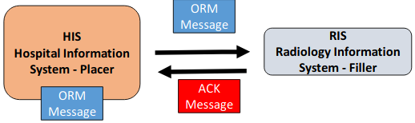
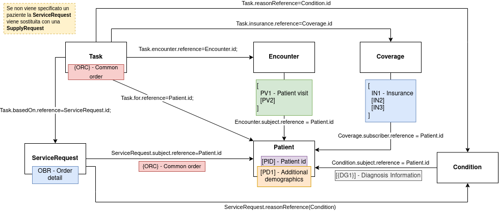
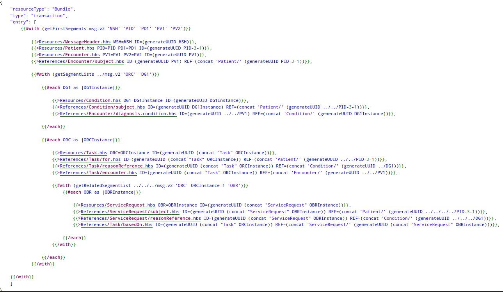

Un messaggio ORM rappresenta una richiesta per servizi(analisi, referto), materiali (e.g., 500ml of 2.5% saline) o informazioni.
La transmissione degli ordini avviene tra l’applicazione che dispone l’ordine (the placer) all’applicazione che compilerà la richiesta (the filler).
I messaggi ORM trovano maggiore impiego per l'invio di Radiology Orders e Lab Orders.
Alcune informazioni degne di nota:
il messaggio ORM può non essere associato ad un paziente, di conseguenza il PID diventa opzionale;
il segmento OBX è opzionale ed il suo uso è differente rispetto al caso di ORU; in questo caso OBX favorisce l'interpretazione del messaggio lato sistema ricevente;
generalmente per trasmettere ordini ci si avvale del messaggio ORM-O01;
ORM - Case Study
Tipicamente un medico sottomette una richiesta attraverso un sistema placer, nella Fig.1 lo HIS. La richiesta tradotta in un messaggio HL7 ORM giungerà fino al sistema filler, nella Fig.1 il RIS, il quale risponderà con un ACK.

Fig.1 - Invio di una richiesta radiologica
Si prenda il caso in cui un uomo, afroamericano, di nome John Applessed,
MRN:20891312, SSN:123-45-7890, nato il 1/12/1996, con account number 11480003,
necessita di una lastra alla caviglia (X-Ray - ankle).
La richiesta viene effettuata dal Dr. James Matthews. L'esatta procedura da eseguire è X-RAY ANKLE 3+ VW con codice CPT 73610.
Basandosi su queste informazioni si può procedere con la costruzione del messaggio.
MSH - Message Header
Dati HIS (sistema mittente), RIS (sistema destinatario) ed assumendo che la richiesta sia stata effettuata il 18/04/2014 alle 17:33:14.
Dato che la richiesta dipende su uno specifico paziente, questo deve essere incluso nel messaggio mediante il segmento PID.
PID|1||20891312^^^^EPI||APPLESEED^JOHN^A^^MR.^||19661201|M||AfrAm|505 S. HAMILTON AVE^^MADISON^WI^53505^US^^^DN |DN|(608)123-4567|(608)123-5678||S|| 11480003|123-45-7890||||^^^WI^^
PD1 - Patient Additional demographics
PD1 contiene il nome e l'ID della struttura e dell'operatore che ha effettuato l'ordine.
Il segmento di esempio contiene solamente il medico che ha inoltrato la richiesta.
PV1|||^^^CARE HEALTH SYSTEMS^^^^^||| |1173^MATTHEWS^JAMES^A^^^||||||||||||610613||||||||||||||||||||||||||||||||V
ORC - Common Order
ORC conserva i dettagli della richiesta come NW (new order), il numero originario dell'ordine (987654) creato dal placer system e quello (76543) inserito dal filling system.
Tramite il segmento DG1 si forniscono ulteriori informazioni sulla
diagnosi così da permettere ai sistemi di fatturazione di compiere i propri calcoli.
DG1||I10|S82^ANKLE FRACTURE^I10|ANKLE FRACTURE||
ankle fracture è codificato tramite S82.
Bringing it all together
MSH|^~\&|HIS|MedCenter|RIS|MedCenter|20140418173314|1148|ORM^O01|497|D|2.3||
PID|1||20891312^^^^EPI||APPLESEED^JOHN^A^^MR.^||19661201|M||AfrAm|505 S. HAMILTON AVE^^MADISON^WI^53505^US^^^DN |DN|(608)123-4567|(608)123-5678||S|| 11480003|123-45-7890||||^^^WI^^
PD1|||FACILITY(EAST)^^12345|1173^MATTHEWS^JAMES^A^^^
PV1|||^^^CARE HEALTH SYSTEMS^^^^^||| |1173^MATTHEWS^JAMES^A^^^||||||||||||610613||||||||||||||||||||||||||||||||V
ORC|NW|987654^HIS|76543^EPC||Final||^^^20140418170014^^^^||20140418173314|1148^PATTERSON^JAMES^^^^||1173^MATTHEWS^JAMES^A^^^|1133^^^222^^^^^|(618)222-1122||
OBR|1|363463^EPC|1858^EPC|73610^X-RAY ANKLE 3+ VW^^^X-RAY ANKLE ||||||||||||1173^MATTHEWS^JAMES^A^^^|(608)258-
8866||||||||Final||^^^20140418170014^^^^|||||6064^MANSFIELD^JEREMY^^^^||1148010^1A^EAST^X-RAY^^^|^|
DG1||I10|S82^ANKLE FRACTURE^I10|ANKLE FRACTURE||
ORM_O01 - v2ToFHIR

Fig.2 - rappresentazione di ORM_O01 tramite risorse FHIR
La Fig.2 mostra le risorse FHIR coinvolte durante la conversione di un messaggio ORM_O01 da v2 a FHIR. Tramite apposite freccie vengono illustrare le relazioni tra le risorse (Reference) indicando inoltre anche il campo della risorsa interessato (e.g Patient.id).
I riquadri colorati rappresentano segmenti HL7 v2; la loro collocazione nel disegno determina la semantica, la quale può esprimersi mediante una relazione oppure attraverso una singola risorsa FHIR.
Per la realizzazione del grafico ci si è avvalsi delle tabelle di Mappings offerte dalla community HL7.
Microsoft FHIR Converter - DISI template
Le relazioni prensenti nella Fig.2 sono state impiegate nella costruzione di un template per il messaggio ORM_O01. Il template mostrato in Fig.3 e` input valido per il Microsoft FHIR Converter.
La conversione effettuata da quest'ultimo porterà all'implementazione di una FHIR Transaction.

Fig.3 - template ORM_O01 (handlebars)